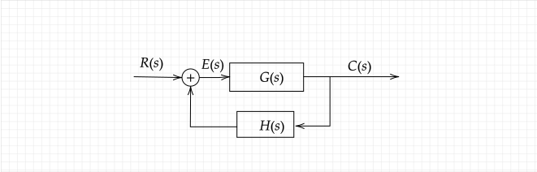
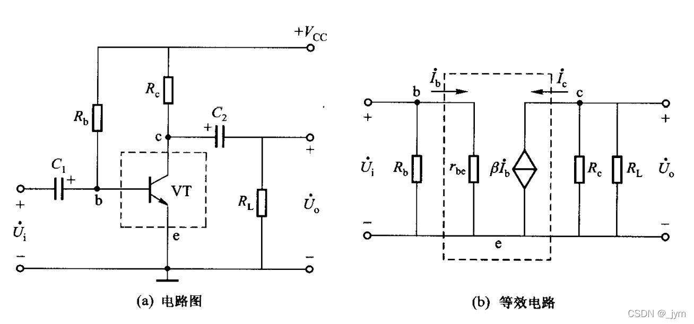

想到以前解证明题：条件推导下，结论推导下，中间一凑，解决战斗~
反馈的基本概念
反馈（Feedback）是控制理论中的基本概念，假设控制系统框图如下：

其对应的传递函数为：
{E(s)=R(s)+H(s)C(s)=E(s)∗G(s)
化简后得到公式：
Ψ(s)=R(s)C(s)=1+G(s)H(s)G(s)
一般来说，带有负反馈环节的传递函数Ψ(s) 会比原传递函数G(s) 增益减小，但是稳定性增加。例如电子电路中加入负反馈后可以使得电路抗干扰能力增强。
共射极放大电路
以微变等效电路法分析放大电路 中第二节的共射极放大电路为例电路图为例：

在动态分析时，可以得到：
{U˙i=I˙brbe+I˙eRe=[rbe+(1+β)Re]I˙bU˙o=−I˙cRL′=−βI˙bRL′
其中，RL′=RL//Rc ，计算后得到：
{A˙u=U˙iU˙o=−rbe+(1+β)ReβRL′Ri=I˙iU˙i=[rbe+(1+β)Re]I˙b//Rb
看A˙u 是不是很眼熟啊，因为β≫1，所以可以进一步化简为：
A˙u==−rbe+KReKRL′−1+rbeKRL′∗RL′RerbeKRL′